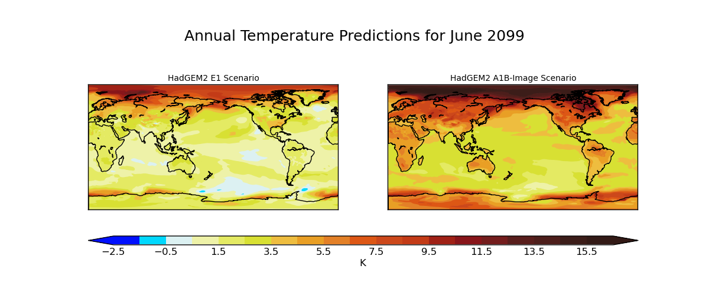

Iris 0.9
Produces maps of global temperature forecasts from the A1B and E1 scenarios.
The data used comes from the HadGEM2-AO model simulations for the A1B and E1 scenarios, both of which were derived using the IMAGE Integrated Assessment Model (Johns et al. 2010; Lowe et al. 2009).
Johns T.C., et al. (2010) Climate change under aggressive mitigation: The ENSEMBLES multi-model experiment. Climate Dynamics (submitted)
Lowe J.A., C.D. Hewitt, D.P. Van Vuuren, T.C. Johns, E. Stehfest, J-F. Royer, and P. van der Linden, 2009. New Study For Climate Modeling, Analyses, and Scenarios. Eos Trans. AGU, Vol 90, No. 21.

"""
Global average annual temperature maps
======================================
Produces maps of global temperature forecasts from the A1B and E1 scenarios.
The data used comes from the HadGEM2-AO model simulations for the A1B and E1 scenarios, both of which were derived using the IMAGE
Integrated Assessment Model (Johns et al. 2010; Lowe et al. 2009).
References
----------
Johns T.C., et al. (2010) Climate change under aggressive mitigation: The ENSEMBLES multi-model experiment. Climate
Dynamics (submitted)
Lowe J.A., C.D. Hewitt, D.P. Van Vuuren, T.C. Johns, E. Stehfest, J-F. Royer, and P. van der Linden, 2009. New
Study For Climate Modeling, Analyses, and Scenarios. Eos Trans. AGU, Vol 90, No. 21.
"""
import os.path
import itertools
import matplotlib.pyplot as plt
import numpy
import iris
import iris.coords as coords
import iris.plot as iplt
def cop_metadata_callback(cube, field, filename):
""" A function which adds an "Experiment" coordinate which comes from the filename. """
# Extract the experiment name (such as a1b or e1) from the filename (in this case it is just the parent folder's name)
containing_folder = os.path.dirname(filename)
experiment_label = os.path.basename(containing_folder)
# Create a coordinate with the experiment label in it
exp_coord = coords.AuxCoord(experiment_label, long_name='Experiment', units='no_unit')
# and add it to the cube
cube.add_aux_coord(exp_coord)
def main():
# Load e1 and a1 using the callback to update the metadata
e1 = iris.load_strict(iris.sample_data_path('E1.2098.pp'),
callback=cop_metadata_callback)
a1b = iris.load_strict(iris.sample_data_path('A1B.2098.pp'),
callback=cop_metadata_callback)
# Load the global average data and add an 'Experiment' coord it
global_avg = iris.load_strict(iris.sample_data_path('pre-industrial.pp'))
# Define evenly spaced contour levels: -2.5, -1.5, ... 15.5, 16.5 with the specific colours
levels = numpy.arange(20) - 2.5
red = numpy.array([0, 0, 221, 239, 229, 217, 239, 234, 228, 222, 205, 196, 161, 137, 116, 89, 77, 60, 51]) / 256.
green = numpy.array([16, 217, 242, 243, 235, 225, 190, 160, 128, 87, 72, 59, 33, 21, 29, 30, 30, 29, 26]) / 256.
blue = numpy.array([255, 255, 243, 169, 99, 51, 63, 37, 39, 21, 27, 23, 22, 26, 29, 28, 27, 25, 22]) / 256.
# Put those colours into an array which can be passed to conourf as the specific colours for each level
colors = numpy.array([red, green, blue]).T
# Subtract the global
# Iterate over each latitude longitude slice for both e1 and a1b scenarios simultaneously
for e1_slice, a1b_slice in itertools.izip(e1.slices(['latitude', 'longitude']), a1b.slices(['latitude', 'longitude'])):
time_coord = a1b_slice.coord('time')
# Calculate the difference from the mean
delta_e1 = e1_slice - global_avg
delta_a1b = a1b_slice - global_avg
# Make a wider than normal figure to house two maps side-by-side
fig = plt.figure(figsize=(12, 5))
# Get the time datetime from the coordinate
time = time_coord.units.num2date(time_coord.points[0])
# Set a title for the entire figure, giving the time in a nice format of "MonthName Year". Also, set the y value for the
# title so that it is not tight to the top of the plot.
fig.suptitle('Annual Temperature Predictions for ' + time.strftime("%Y"), y=0.9, fontsize=18)
# Add the first subplot showing the E1 scenario
plt.subplot(121)
plt.title('HadGEM2 E1 Scenario', fontsize=10)
iplt.contourf(delta_e1, levels, colors=colors, linewidth=0, extend='both')
current_map = iplt.gcm()
current_map.drawcoastlines()
# get the current axes' subplot for use later on
plt1_ax = plt.gca()
# Add the second subplot showing the A1B scenario
plt.subplot(122)
plt.title('HadGEM2 A1B-Image Scenario', fontsize=10)
contour_result = iplt.contourf(delta_a1b, levels, colors=colors, linewidth=0, extend='both')
current_map = iplt.gcm()
current_map.drawcoastlines()
# get the current axes' subplot for use later on
plt2_ax = plt.gca()
# Now add a colourbar who's leftmost point is the same as the leftmost point of the left hand plot
# and rightmost point is the rightmost point of the right hand plot
# Get the positions of the 2nd plot and the left position of the 1st plot
left, bottom, width, height = plt2_ax.get_position().bounds
first_plot_left = plt1_ax.get_position().bounds[0]
# the width of the colorbar should now be simple
width = left - first_plot_left + width
# Add axes to the figure, to place the colour bar
colorbar_axes = fig.add_axes([first_plot_left, bottom + 0.07, width, 0.03])
# Add the colour bar
cbar = plt.colorbar(contour_result, colorbar_axes, orientation='horizontal')
# Label the colour bar and add ticks
cbar.set_label(e1_slice.units)
cbar.ax.tick_params(length=0)
plt.show()
if __name__ == '__main__':
main()